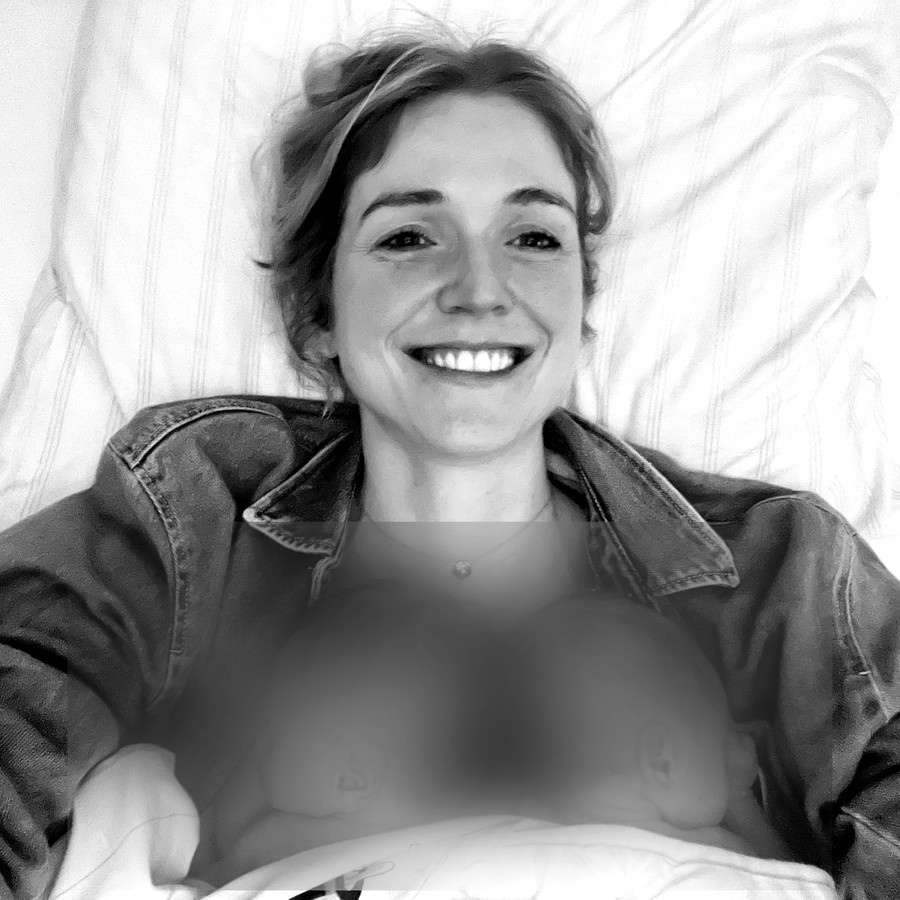

1. Live-Coaching, nicht nur Tracking
Nach jeder Mahlzeit kommt sofort ein konkreter Hinweis: „Dir fehlen heute noch 30 g Protein, eine Lachs-Bowl mittags wäre passend." Kein Selber-Rechnen, kein Googeln.
Ernährungs-Coach für Schwangerschaft und Stillzeit
Logge Mahlzeiten in Sekunden, erhalte sofort einen wissenschaftlich fundierten Hinweis, was du als Nächstes essen kannst — angepasst auf deine genaue Situation.

Vor drei Monaten habe ich Zwillinge bekommen. In den ersten Wochen ist mir aufgefallen, wie wichtig die eigene Versorgung ist. Beim Stillen geht jeder Nährstoff zuerst zu den Kindern. Wenn ich nicht aktiv aufpasse, kommt das aus meinen Reserven. Müdigkeit, brüchige Nägel und der Haarausfall sind oft handfeste Mangel-Symptome, kein „Mama-Leben".
Ich wollte das tracken. Aber keine App konnte mit Zwillingen, exklusivem Pumpen oder Tandemstillen umgehen. Keine sagte mir konkret, was ich als Nächstes essen sollte. Keine belegte ihre Empfehlungen mit Quellen.
Also habe ich angefangen, mir was zu bauen — wissenschaftlich fundiert, auf meine genaue Situation berechnet, mit Live-Coaching nach jeder Mahlzeit. Das hat mir geholfen — falls es auch dir hilft, ist es jetzt da.
— Vanessa
Nach jeder Mahlzeit kommt sofort ein konkreter Hinweis: „Dir fehlen heute noch 30 g Protein, eine Lachs-Bowl mittags wäre passend." Kein Selber-Rechnen, kein Googeln.
Trimester, Anzahl der gestillten Kinder, exklusives Pumpen oder direkt Anlegen, tatsächliches Tagesvolumen Milch — alles individuell. Zwillinge exklusiv? +1.260 kcal, nicht der pauschale „+500"-Standard.
Jede Empfehlung mit Quelle hinterlegt: DGE 2025, BfR, EFSA, LactMed (NIH), FDA/EPA. Tap auf das ⓘ-Icon zeigt sie. Kein Konto, kein Werbe-Tracking, keine Cloud. Alles lokal auf deinem Gerät.
NourishMe geht in den nächsten Tagen in die TestFlight-Beta. Wenn du schwanger bist, stillst, pumpst oder dich bald in einer dieser Situationen wiederfindest, melde dich gerne.
Du erhältst eine Einladung per E-Mail sobald die Beta live ist. Keine Spam, kein Newsletter — nur diese eine Einladung und gelegentlich Bitte um Feedback.
Alle Schwellenwerte und Empfehlungen in NourishMe basieren auf:
NourishMe ist kein medizinisches Produkt. Es ersetzt keine ärztliche oder hebammenbasierte Beratung. Bei medizinischen Fragen wende dich an deine Ärztin oder Hebamme.